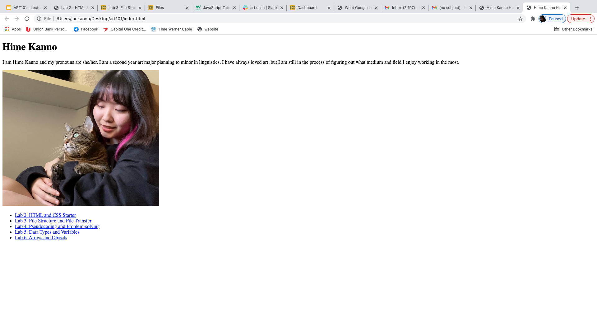

The goal of this lab is to create a file structure and add index.html files for our homepage and lab 3.
Creating the file structure and files went smoothly as they were already provided in our art101 folder. However, we struggled to add a photo to the file. We kept making careless mistakes such as leaving a space where there shouldn't be one, or forgetting to close the tag.
Eventually we were able to make our index.html files to show up properly on the document.
This image shows the file structure. We made sure that all the filenames were lowercase with no spaces.

This is a screenshot of the html source code in Atom for my homepage.
This is a screenshot of the art101/index.html in my browser.
This is a screenshot of the html source code in Atom for lab 3.
This is a screenshot of the art101/lab3/index.html in my browser.